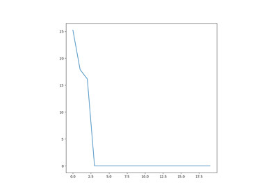

Navigation
index
modules
|
PyDisdrometer 0.1.7 documentation
»
PyDisdrometer Example Gallery
¶
PyDisdrometer Example Gallery.

Simple Example
Generated by Sphinx-Gallery
This Page
Show Source
Quick search
Navigation
index
modules
|
PyDisdrometer 0.1.7 documentation
»